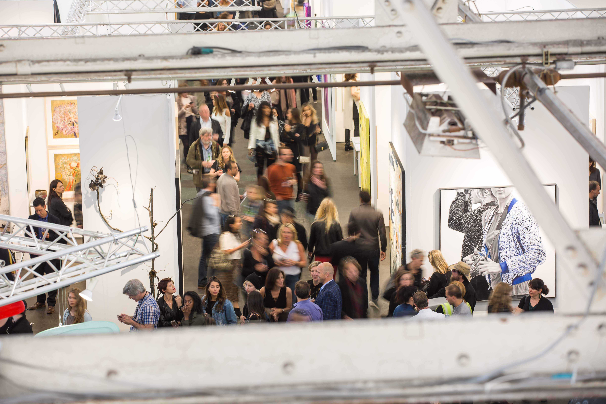

Art Market Productions is now AMP, a creative events firm that designs, builds, promotes and produces important cultural experiences worldwide.
Oct 2020 - Jan 2021 New Orleans
AMP will partner with Prospect to produce the Opening Days of Prospect. 5. Prospect New Orleans is a citywide contemporary art triennial that emphasizes collaborative partnerships and site-specificity, presenting artwork by local, national, and international artists in both traditional and highly unexpected environments.
Opening June 21 Brooklyn, New York
Celebrating society’s most pervasive mark makers and rule breakers with a sprawling showcase of work by more than 150 artists from around the world - including Jenny Holzar, Shepard Fairey, Takashi Murakami, and Guerilla Girls - Beyond The Streets will take over two floors of Twenty Five Kent.
July 5 - 7 The Hamptons
Market Art + Design, the East End's premier art fair, returns to The Bridgehampton Museum for the fair's ninth and largest edition to date with 90 top galleries from around the world presenting the best in modern and contemporary art and design in an expanded, museum-quality pavilion in the heart of the Hamptons.
August 1 - 4 Seattle
Now going into its fifth edition, Seattle Art Fair is a one-of-a-kind destination for the best in modern and contemporary art and a showcase for the vibrant arts community of the Pacific Northwest.
March 5-8 2020 NYC
Art on Paper's medium-driven focus lends itself to significant projects - unique moments that have set the fair apart and established an important destination for the arts in New York City. Art on Paper's sixth edition will feature 100 top galleries from around the world presenting the best in paper-based art.
April 2020 San Francisco
Art Market San Francisco is the Bay Area's premier art fair. Now going into its 10th edition, Art Market San Francisco features 85 modern and contemporary art galleries from around the world, welcoming over 25,000 attendees year over year.
About us
AMP believes that better experiences can make better people. Ten years ago we started out with a vision to improve the ecosystem of events in the visual arts and we since have had the privilege of welcoming over a million guests. Today we look forward to utilizing our expanded capabilities, longstanding connections and reputation for excellence to bring new and exciting ideas to life.
Our services include
Creative & Marketing: Creative Development Art Direction Partnership Marketing Design Development & Integration Social Media Implementation Public Relations Brand Positioning Sponsor Development Strategic Planning & Copywriting
Production & Planning: Project Management Production Planning Venue Selection Event/Set Design Custom Fabrication Onsite Labor & Management Performance Measurement Timeline & Budget Management Box Office & Ticketing Food & Beverage
Our clients and partners include
1stdibs AIG Artsy Brooklyn Museum Cadillac CAMH David Zwirner Delta Airlines Fine Arts Museums of San Francisco FX Networks Gagosian Godiva Goldenvoice Gulfstream Infiniti J.P. Morgan Lincoln Ligne Roset Museum of Ice Cream Olson Kundig Pace Parrish Art Museum Peconic Land Trust Perkins + Will Perrier Seattle Art Museum Roche Bobois Paris Sotheby's Teamlab Tesla The Wall Street Journal Uber United Talent Agency Viacom Vulcan Arts + Entertainment
Studio:
212 – 518 – 6912
Art Market Productions is now AMP, a creative events firm that designs, builds, promotes and produces important cultural experiences worldwide.